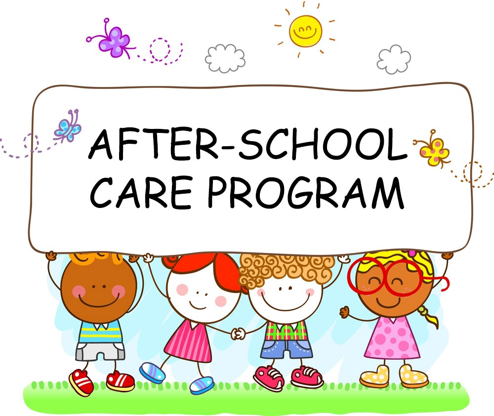

What's included in Summer Day camp?
Learning opportunities abound in our fun filled environment designed for kindergarten through 5th grade students. Exploring, Arts, Crafts, and Physical Activities, are all led by our highly qualified staff. We have excellent staff to student ratios. All staff are trained in CPR and First Aid.
Each day is different, but will include opportunities for play, academic enrichment with an emphasis on arts and sciences, snacks, arts and crafts, and friends, as well as physical activity and reading opportunities. Studies have shown that students who read at least 20 minutes a day, will maintain their academic growth. At least weekly, we will seek to broaden their horizons with visits from and / or to various educational programs and experiences in our community.
What about After School Care?
After school care is offered at the following schools: Chief Charlo Elementary, Hawthorne Elementary, Hellgate Elementary, Jeannette Rankin Elementary, Lewis & Clark Elementary, and Rattlesnake Elementary. The day will consist of getting help with homework, reading time, free time, group games, snack time, and outside time (weather permitting)!